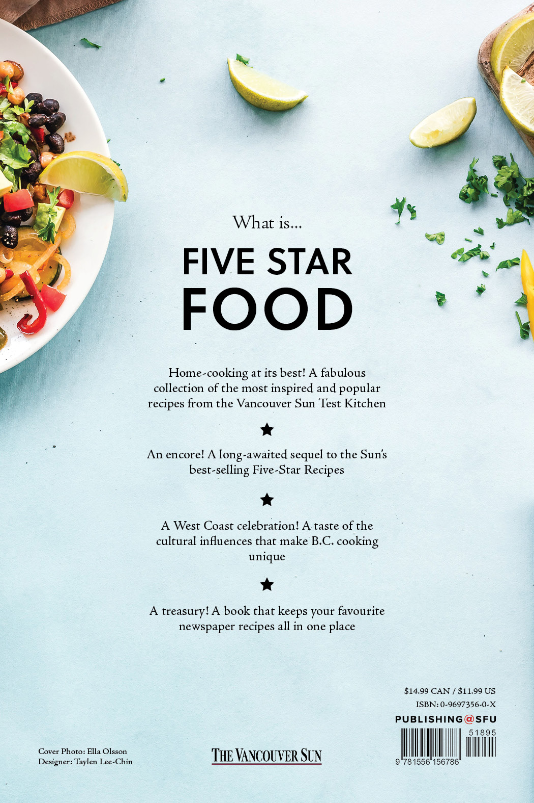
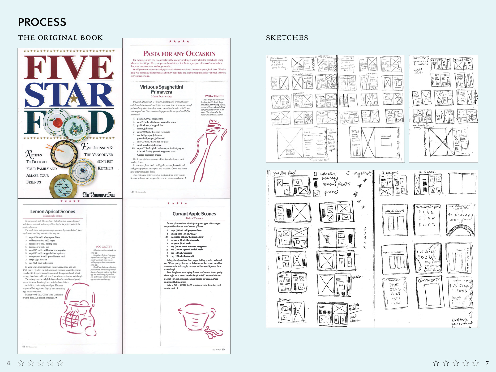
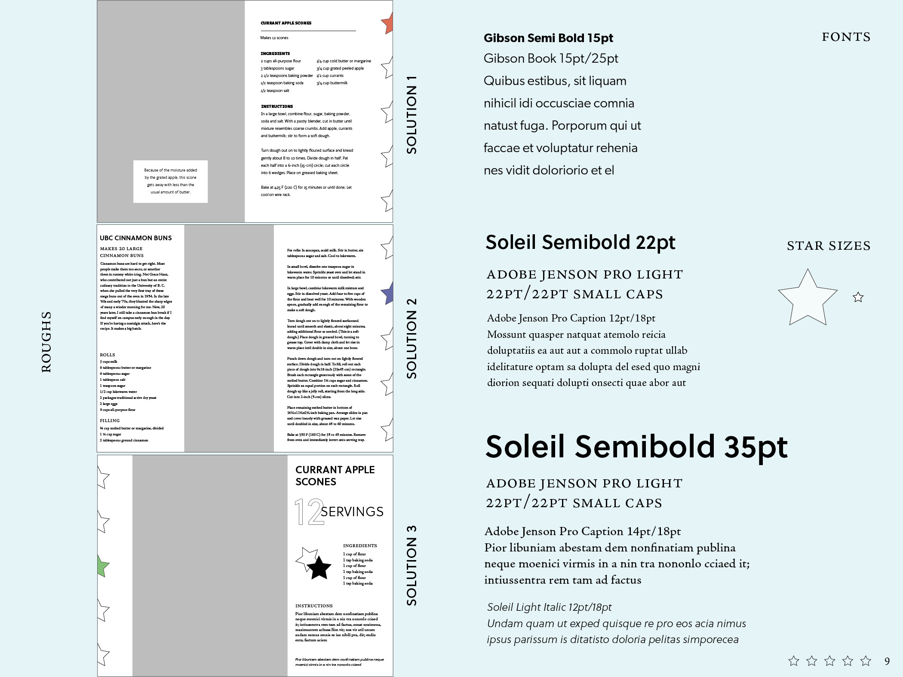
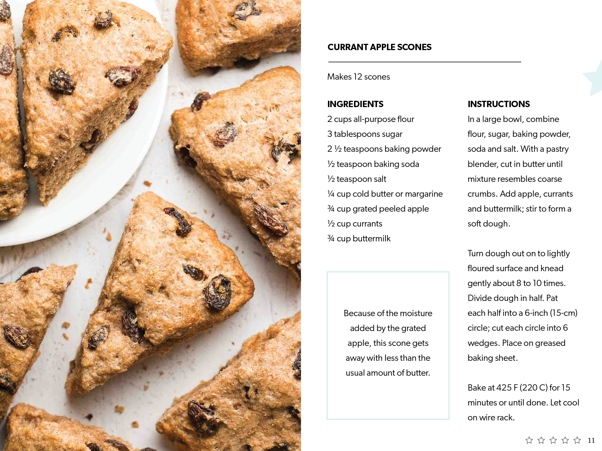
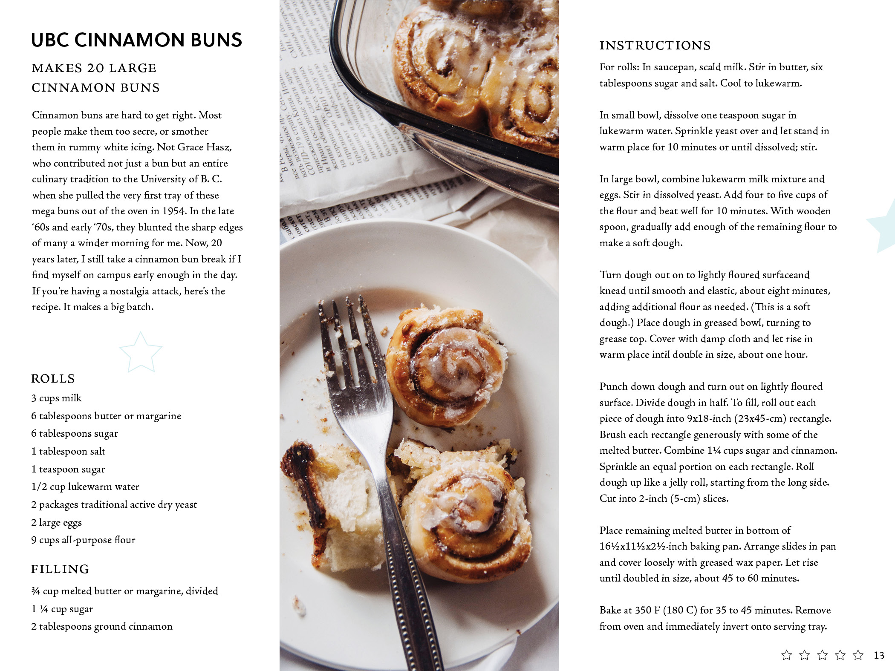
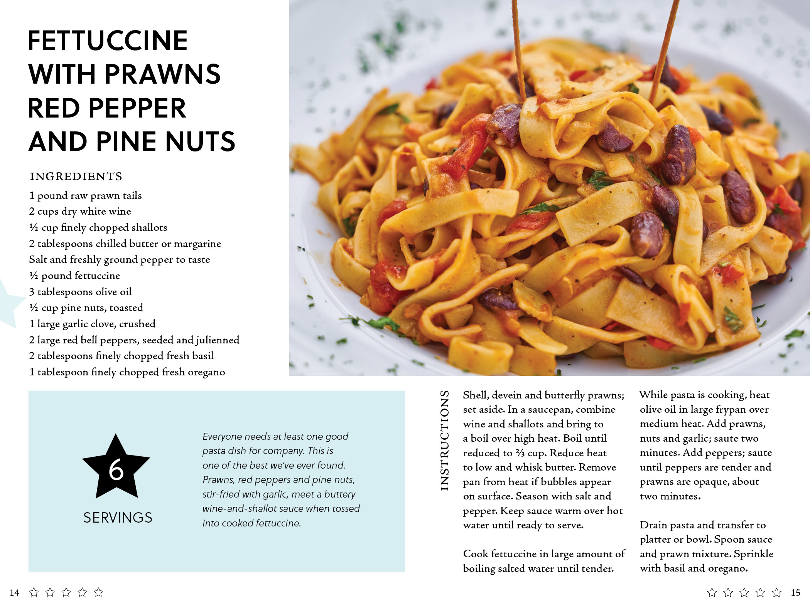

Five Star Food
Date
Summer 2020
Role
Graphic Design
Layout Design
Typography
Tools
InDesign
Illustrator
Photoshop
Overview
This Five Star Food cookbook redesign is a student project created for a graphic design class. The assignment consisted of taking the content from the cookbook of our choosing and designing the page layouts, colour palettes and selecting corresponding photos and typography that would complete the overall look of the design. In approaching this project, I wanted to target a young adult audience and present a refreshed modern design cookbook that contains and showcases the best classic recipes.
Challenges for this project were that every page spread had a set of restrictions. Spread 1: only one font family was allowed, had to be the same font height, only 2 font weights could be selected and it had to be designed on a grid. Spread 2: only 2 font families and 2 font sizes were allowed, in addition with having to be designed on a grid. Spread 3: we had to explore extreme sizes and contrasts and to either design on a grid or grid-free structure.
Additional Notes: The cookbook redesigned is "Five Star Food" by The Vancouver Sun (Eve Johnson) - 1993. The images used for this project are stock images and are not my own.

Above: The redesigned front and back cover of the cookbook.


Above: Images from the original cookbook, early sketches and brainstormed ideas.


